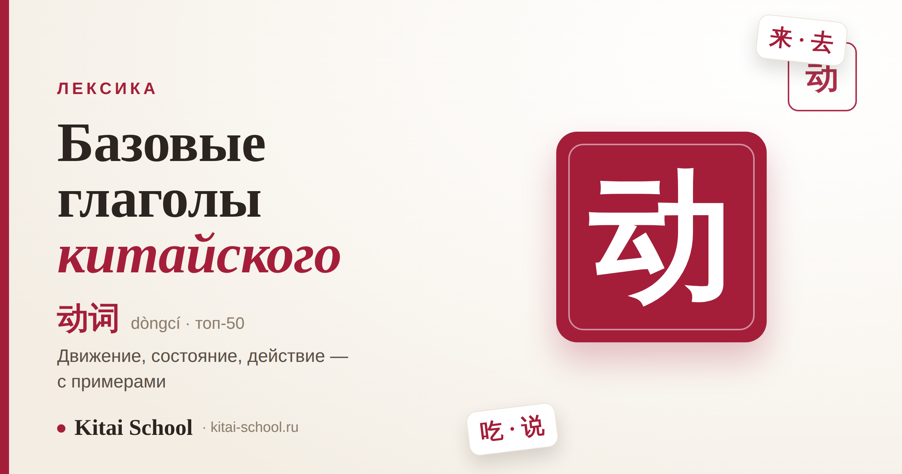
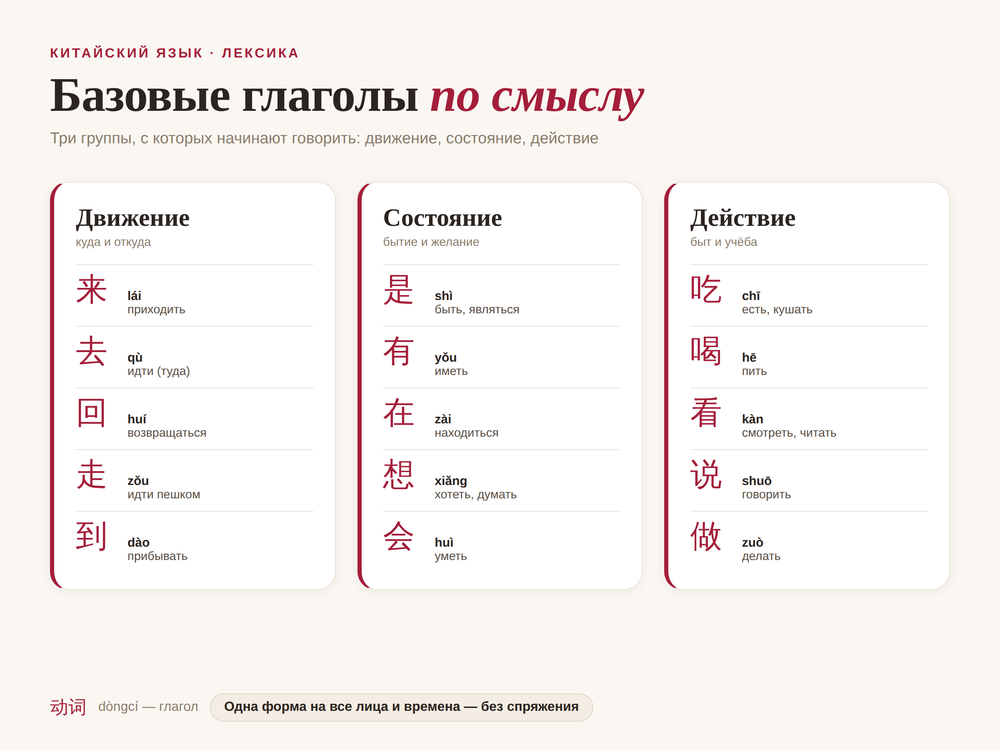
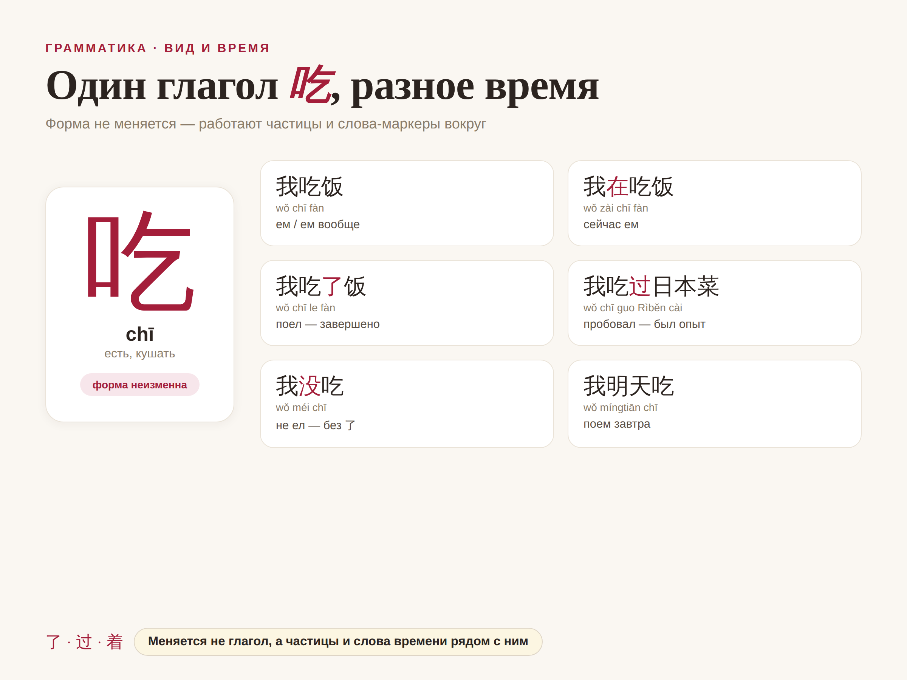
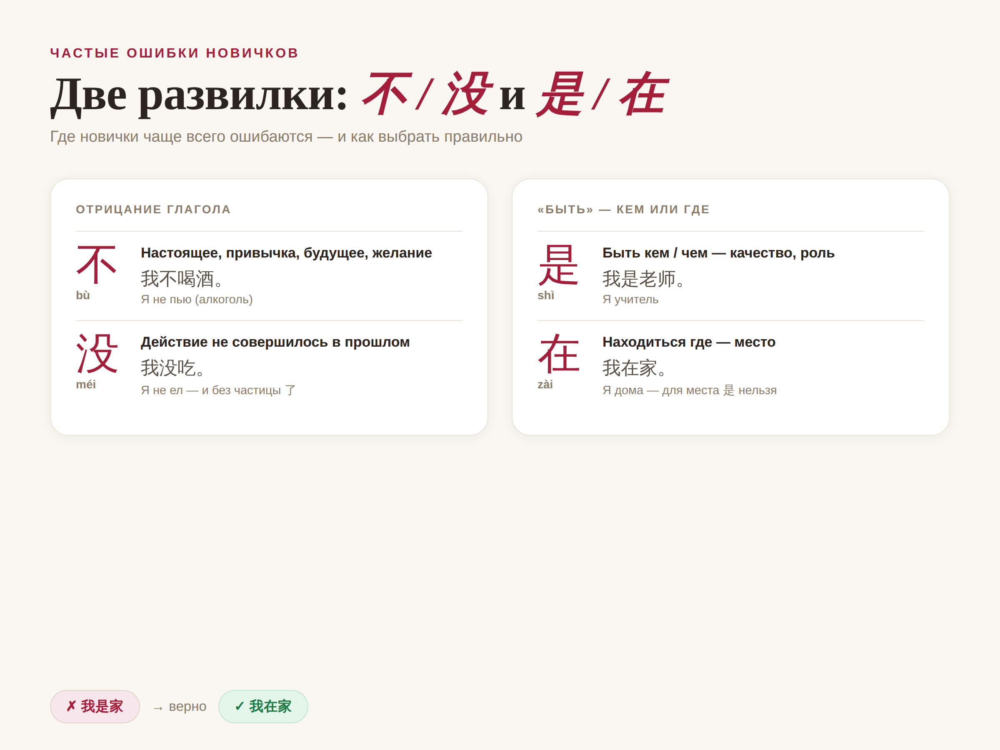

Базовые глаголы китайского: 50 слов, с которыми вы заговорите

У китайского глагола есть свойство, из-за которого его любят даже те, кого в школе доводили французские и английские спряжения: он не меняет форму. Совсем. Одно и то же слово подходит и для «я», и для «ты», и для «он», и для вчера, и для завтра.
Это значит, что выучив полсотни глаголов, вы уже собираете из них живые фразы — не заучивая ни одной таблицы окончаний. Ниже я разбила 50 базовых глаголов на три смысловые группы — движение, состояние и действие — и к каждому дала пиньинь, перевод и короткий пример в предложении. А в конце объясняю то, что действительно требует внимания: как без спряжений показать время и как правильно строить отрицание.
Если коротко
Форма китайского глагола неизменна: 我吃 / 你吃 / 他吃 — «ем / ешь / ест» с одним и тем же 吃. Время и завершённость берут на себя частицы: 了 (действие закончилось), 过 (был такой опыт), 着 (состояние длится). Отрицают двумя словами: 不 — для настоящего, привычек и будущего, 没 — для того, что не случилось в прошлом. Полусотни частотных глаголов хватает, чтобы заговорить на уровне HSK 1–2.
Почему китайский глагол устроен проще, чем кажется
В европейских языках глагол несёт на себе половину грамматики: он показывает, кто действует, сколько их и когда всё произошло. В китайском эту работу глагол с себя снимает и передаёт другим словам. Сам он остаётся неподвижным.
Нет форм по лицам.我去 (wǒ qù) — я иду, 你去 (nǐ qù) — ты идёшь, 他们去 (tāmen qù) — они идут. Глагол 去 ни разу не дрогнул — меняется только местоимение перед ним.
Нет форм времени. Фраза 我吃饭 сама по себе значит «я ем» или «я ем вообще». Когда именно — досказывают слова-ориентиры: 今天 (сегодня), 昨天 (вчера), 明天 (завтра) — и служебные частицы.
Смысл держит порядок слов. Каркас простой: «кто → (когда/где) → глагол → что». 我 + 喝 + 茶 (wǒ hē chá) — «я пью чай». Переставите слова — поменяется смысл, потому что именно позиция, а не окончание, говорит, кто здесь подлежащее.
Запомните главное разграничение: трудность китайского глагола не в его форме (её нет), а в виде — закончилось действие, длится или было когда-то в опыте. Вот это и стоит отрабатывать, а не искать несуществующие окончания.
Глаголы движения
С них удобно стартовать: они короткие, частотные и сразу дают ощущение, что вы говорите, а не составляете упражнение. Многие из них позже начнут работать ещё и как «направление» при других глаголах — например, 来 и 去 после глагола показывают, к вам движется действие или от вас.

Три смысловые группы, с которых начинают говорить. Форма глагола одна на все лица и времена.
Базовые глаголы движения — куда и откуда.
Глагол
Пиньинь
Перевод
Пример
来
lái
приходить, прийти
他明天来。Tā míngtiān lái. — Он придёт завтра.
去
qù
идти, уходить (туда)
我去学校。Wǒ qù xuéxiào. — Я иду в школу.
走
zǒu
идти пешком, уходить
我们走吧。Wǒmen zǒu ba. — Пойдём.
回
huí
возвращаться
我回家。Wǒ huí jiā. — Я иду домой.
到
dào
прибывать, доходить
我到了。Wǒ dào le. — Я на месте.
进
jìn
входить
请进！Qǐng jìn! — Входите, пожалуйста!
出
chū
выходить
他出去了。Tā chūqù le. — Он вышел.
上
shàng
подниматься, садиться (в транспорт)
上车吧。Shàng chē ba. — Садись в машину.
下
xià
спускаться, выходить (из транспорта)
我在这儿下车。Wǒ zài zhèr xià chē. — Я выхожу здесь.
跑
pǎo
бегать, бежать
他跑得很快。Tā pǎo de hěn kuài. — Он бегает быстро.
Глаголы состояния и модальные
Эта группа — служебный костяк языка. Сюда попадают глаголы бытия («быть», «иметь», «находиться») и модальные («хотеть», «уметь», «мочь»). Без них не получится почти ни одного предложения: они цепляют к себе смысловой глагол или существительное и держат всю конструкцию.
Бытийные, эмоциональные и модальные глаголы.
Глагол
Пиньинь
Перевод
Пример
是
shì
быть, являться
我是学生。Wǒ shì xuésheng. — Я студент.
有
yǒu
иметь, иметься
我有时间。Wǒ yǒu shíjiān. — У меня есть время.
在
zài
находиться (где-то)
他在家。Tā zài jiā. — Он дома.
想
xiǎng
хотеть; думать; скучать
我想喝茶。Wǒ xiǎng hē chá. — Я хочу выпить чаю.
要
yào
хотеть, нужно, собираться
我要这个。Wǒ yào zhège. — Я хочу это.
会
huì
уметь; будет (вероятность)
我会说中文。Wǒ huì shuō Zhōngwén. — Я умею говорить по-китайски.
能
néng
мочь (быть в состоянии)
你能帮我吗？Nǐ néng bāng wǒ ma? — Ты можешь мне помочь?
可以
kěyǐ
можно (разрешение)
可以进来吗？Kěyǐ jìnlái ma? — Можно войти?
喜欢
xǐhuan
нравиться, любить
我喜欢中国菜。Wǒ xǐhuan Zhōngguó cài. — Мне нравится китайская кухня.
爱
ài
любить
我爱你。Wǒ ài nǐ. — Я тебя люблю.
觉得
juéde
считать, полагать; чувствовать
我觉得很好。Wǒ juéde hěn hǎo. — По-моему, это хорошо.
知道
zhīdào
знать (факт)
我不知道。Wǒ bù zhīdào. — Я не знаю.
认识
rènshi
быть знакомым, узнавать
我认识他。Wǒ rènshi tā. — Я с ним знаком.
希望
xīwàng
надеяться, желать
我希望你来。Wǒ xīwàng nǐ lái. — Надеюсь, ты придёшь.
需要
xūyào
нуждаться, требоваться
我需要帮助。Wǒ xūyào bāngzhù. — Мне нужна помощь.
Сразу разведите 是 и 在.是 (shì) отвечает на вопрос «быть кем/чем» (我是老师 — я учитель), а 在 (zài) — «быть где» (我在北京 — я в Пекине). Для местоположения 是 не годится — это одна из первых ошибок, которую делают почти все.
Из практики преподавания
Когда ученики слышат, что глаголы не спрягаются, у них буквально загораются глаза: «И всё, больше ничего?». А спустя неделю приходят с новым вопросом — «слова знаю, а куда ставить 了 — не понимаю». Это закономерно: вся сложность китайского глагола спрятана не в форме, а в том, как показать, что действие завершилось или уже случалось раньше.
Поэтому я советую учить глагол не голым словом из столбика, а сразу «пучком» контекстов: 吃 → 吃饭 → 吃了饭 → 吃过 → 想吃. Одно слово в пяти живых сочетаниях садится в память крепче, чем десять слов из списка. Через месяц такой практики частицы 了/过/着 перестают пугать и встают на места почти сами.
Глаголы действия: быт и учёба
Самая обширная группа — всё, что мы делаем изо дня в день. Именно эти глаголы дают материал для бытовых диалогов: заказать еду, купить билет, договориться о встрече, попросить о помощи. Если движения и состояния — это скелет, то действия — мышцы, которыми фраза начинает двигаться.
Частотные глаголы действия для повседневных ситуаций.
他在北京工作。Tā zài Běijīng gōngzuò. — Он работает в Пекине.
用
yòng
использовать, применять
我用筷子。Wǒ yòng kuàizi. — Я пользуюсь палочками.
找
zhǎo
искать
我找我的手机。Wǒ zhǎo wǒ de shǒujī. — Я ищу свой телефон.
给
gěi
давать
给我看看。Gěi wǒ kànkan. — Дай посмотреть.
拿
ná
брать, держать (в руке)
拿着这个。Názhe zhège. — Держи это.
开
kāi
открывать, включать, водить
请开门。Qǐng kāi mén. — Откройте дверь, пожалуйста.
关
guān
закрывать, выключать
关灯吧。Guān dēng ba. — Выключи свет.
坐
zuò
сидеть, садиться; ехать (на)
请坐。Qǐng zuò. — Садитесь, пожалуйста.
站
zhàn
стоять
别站在门口。Bié zhàn zài ménkǒu. — Не стой в дверях.
睡觉
shuìjiào
спать, ложиться спать
我要睡觉了。Wǒ yào shuìjiào le. — Я иду спать.
起床
qǐchuáng
вставать (с постели)
我七点起床。Wǒ qī diǎn qǐchuáng. — Я встаю в семь.
打
dǎ
бить; играть (в мяч); звонить
我给你打电话。Wǒ gěi nǐ dǎ diànhuà. — Я тебе позвоню.
帮
bāng
помогать
谢谢你帮我。Xièxie nǐ bāng wǒ. — Спасибо, что помог.
等
děng
ждать
等一下。Děng yíxià. — Подожди немного.
Присмотритесь к 睡觉, 起床, 打电话. Это не цельные слова, а связки «глагол + дополнение» (по-китайски их называют 离合词 — «слитно-раздельные»). Между частями можно вставлять другие элементы: 睡了一觉, 起了床, 打个电话. На старте их проще запоминать целиком, а тонкости «разрезания» оставить на потом.
Как показать время без спряжений
Раз глагол неизменен, за время и характер действия отвечают три инструмента: слова-ориентиры времени, видовые частицы и правильно выбранное отрицание. Разберём частицы и отрицание — с ними чаще всего и возникает путаница.

Один и тот же 吃 в шести ситуациях. Работают частицы 在/了/过 и слова времени, а сам глагол не меняется.
Видовые частицы: 了, 过, 着
了 (le) — действие завершилось или произошло изменение состояния: 我吃了饭 (wǒ chī le fàn) — «я поел».
过 (guo) — отмечает пережитый опыт, «доводилось хотя бы раз»: 我去过中国 (wǒ qù guo Zhōngguó) — «я бывал в Китае».
着 (zhe) — показывает, что состояние длится: 门开着 (mén kāi zhe) — «дверь стоит открытой».
Отрицание: 不 против 没
不 (bù) отрицает настоящее, привычное, будущее и желание: 我不喝酒 (wǒ bù hē jiǔ) — «я не пью спиртного» (вообще, как правило).
没(有) (méi yǒu) отрицает, что действие совершилось в прошлом: 我没吃 (wǒ méi chī) — «я не ел». Важная деталь: с 没 частица 了 уже не ставится — само 没 и говорит, что действия не было.
Один глагол 吃 в разных «временах» — форма не меняется ни разу.
Фраза
Пиньинь
Смысл
我吃饭
wǒ chī fàn
я ем / ем вообще
我吃了饭
wǒ chī le fàn
я поел (завершено)
我吃过日本菜
wǒ chī guo Rìběn cài
я пробовал японскую кухню
我在吃饭
wǒ zài chī fàn
я сейчас ем
我没吃饭
wǒ méi chī fàn
я не ел
我明天吃
wǒ míngtiān chī
я поем завтра
Четыре ошибки, на которых спотыкаются новички
Эти четыре промаха встречаются почти у каждого, кто только берётся за глаголы. Если проговорить их заранее, половину граблей можно обойти стороной.

Две развилки, где ошибаются чаще всего: чем отрицать глагол — 不 или 没, и каким «быть» пользоваться — 是 или 在.
1. Ставят 了 в отрицании. Неверно: 我没吃了. Верно: 我没吃. С 没 частица 了 лишняя.
2. Путают 不 и 没. «Вчера не ел» — это факт прошлого, поэтому 昨天没吃, а не 昨天不吃. А вот «я не ем мяса вообще» — привычка, значит 我不吃肉.
3. Обозначают место через 是. Неверно: 我是家. Верно: 我在家. Для «быть где-то» существует отдельный глагол 在.
4. Пытаются «спрягать». Не ищите у китайского глагола окончаний — их нет и не будет. Меняется не само слово, а частицы и ориентиры времени вокруг него.
Частые вопросы
Спрягаются ли глаголы в китайском языке?
Нет. Форма глагола не меняется ни по лицам, ни по числам, ни по временам: 我吃 (я ем), 你吃 (ты ешь), 他吃 (он ест) — всюду один и тот же 吃. Время и завершённость передают частицы (了, 过) и слова-ориентиры времени.
Как выразить прошедшее время?
Частицей 了 (действие завершено) или 过 (был опыт), а также словами вроде 昨天 (вчера). Например: 我吃了 — я поел; 我去过中国 — я бывал в Китае.
Чем 不 отличается от 没 при отрицании?
不 (bù) отрицает настоящее, привычное и будущее: 我不喝酒 — я не пью. 没(有) (méi) отрицает, что действие совершилось в прошлом: 我没吃 — я не ел. С 没 частица 了 не ставится.
Сколько глаголов нужно для базового общения?
На старте достаточно 50–100 самых частотных: движения (来去走回), бытийные (是有在) и действия (吃喝看说做). Этого хватает для уровня HSK 1–2 и обычных повседневных диалогов.
Чем отличаются глаголы 是 и 在?
是 (shì) — «быть, являться» для качеств и ролей: 我是老师 (я учитель). 在 (zài) — «находиться» для места: 我在家 (я дома). Для местоположения 是 не используют.
Успехов в учёбе! 加油！
Автор
Юлия Горяина
Китаист и лингвокоуч, докторант Шаньдунского университета (山大), преподаватель МГУ ВШБ. Более 20 лет практики преподавания китайского языка.
Источники: Wikipedia — Chinese grammar (verbs, aspect); Википедия — «Китайский язык» (грамматический строй, отсутствие словоизменения); практика преподавания базовой лексики и глагольного вида.